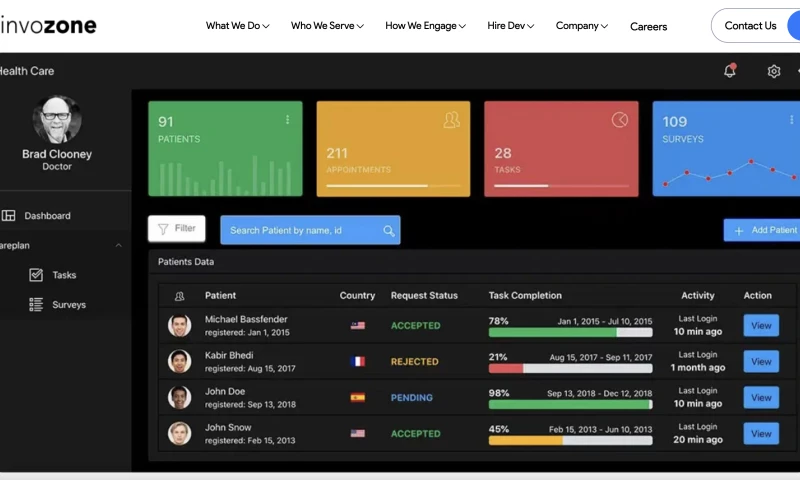

InvoZone
Industry: Information Technology (IT) Services and Software Engineering
Website
Founder/s: Furqan Aziz
Headquarters: Pembroke Pines, Florida, United States
Company: Private
Founded: 2014
Services: 1. Staff Augmentation & Dedicated Teams: Providing pre-vetted engineers (frontend, backend, QA, and mobile) who embed directly into an organization's existing internal team structures.
2. Next-Gen Emerging Tech Development: Building custom platforms focused heavily on Artificial Intelligence (AI/ML integration), blockchain/Web3 infrastructure, game development, and metaverse architectures.
3. Core Enterprise Engineering: Custom web and mobile app development, UI/UX design, cloud architecture management, DevOps pipelines, and enterprise cybersecurity audits.
InvoZone is a global software development company and tech staff augmentation partner. It connects businesses, startups, and mid-market enterprises with pre-vetted remote engineering talent and full-cycle software delivery teams.
The company was founded in 2014 by tech entrepreneur Furqan Aziz, who serves as the active Chief Executive Officer (CEO). Aziz established the firm to fix transparency gaps in remote software delivery and resource augmentation. The executive tier also features Naveed Aziz as Chief Technology Officer (CTO) and Asfand Yarr as Chief Product Officer (CPO).